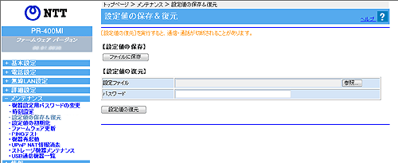

| メンテナンス−設定値の保存＆復元 |
これまでに設定した各種内容は、すべて本商品のフラッシュメモリ内に、ユーザ設定として保存されています。
設定の保存を行うと、ユーザ設定をファイルに保存し、その内容で元の設定に戻すことができます。 |
| |
| ※「Web設定」画面に表示されているボタンについての説明は こちら |
|  |
|
|
| ［設定値の保存］ |
| ＜設定内容を保存する場合＞ |
※「設定値の復元」を行うとき、その設定値の保存時に設定されていた機器設定用パスワードが
必要となります。機器設定用パスワードはお客様にて厳重に管理してください。 |
| |
| 1. |
[ファイルに保存]をクリックする
|
| 2. |
以降、お使いのパソコンに搭載されているOS、ブラウザの指示に従いファイルを保存する |
|
| ※ |
ファイルが保存される領域は、お使いのパソコンに搭載されているOS、ブラウザの設定により異なります。 |
|
|
| ［設定値の復元］ |
| ＜保存内容を復元する場合＞ |
| |
| 1. |
［参照］をクリックする |
| 2. |
お使いのパソコンに搭載されているOS、ブラウザの指示に従い、設定内容を保存したファイルを指定する |
| 3. |
［設定値の復元］をクリックする※ |
| 4. |
［OK］をクリックする
アップロードが完了すると本商品が自動的に再起動し、再表示を促す画面が表示されます。［再表示］をクリックして画面を再表示してください。復元された設定で動作します。
|
| |
| ※ |
「Web設定」画面に「設定値の復元が実施できません。」と表示された場合は、パスワードが間違っている可能性があります。「設定値の復元」には、「設定値の保存」を行ったときの機器設定用パスワードが必要です。パスワード入力欄には、初期値として現在設定されている機器設定用パスワードが入力されていますので、保存時の機器設定用パスワードを入力し直してから、［設定値の復元］をクリックしてください。
|
|
| |
＜お願い＞
- 設定内容をフラッシュメモリに書き込みます。書き込み中は、本商品の電源を切らないようにしてください。フラッシュメモリへの書き込み中に電源を切ると、本商品が動作しなくなります。
- 保存内容を復元する場合は、本商品とパソコンをLANケーブルで接続して復元してください。無線接続の場合、本商品を交換した際にSSID・暗号化などが一致しないため、通信できなくなる可能性があります。
→設定方法はこちらをご覧ください。
|
|
| |
＜お知らせ＞
- 設定内容はすべて復元された設定ファイルにより上書きされます。
- 設定ファイルのディレクトリ（フォルダ）名、ファイル名には半角英数記号文字を使用し、全角文字および半角カタカナを使用しないでください。設定ファイルが復元できない場合があります。
- ディレクトリ（フォルダ）名やファイル名には、\ / : * ? " < > | は使用できません。
- ご契約を変更された場合、変更前に保存した設定ファイルは使用しないでください。設定内容が正しく復元できません。
- 機器設定用パスワードは復元されません。
- 以下の設定値は復元されない場合があります。復元の操作後に必ず設定内容を確認してください。
・無線ネットワーク名（SSID）
・事前共有キー（PSK）
・WEPキー
・無線ネットワーク名（SSID）の隠蔽（ANY接続拒否）
・ファームウェア更新種別
- お客様のご利用環境によっては設定値の保存・復元の際には時間がかかる場合があります。
|
|
|
| ↑ページのトップへ |